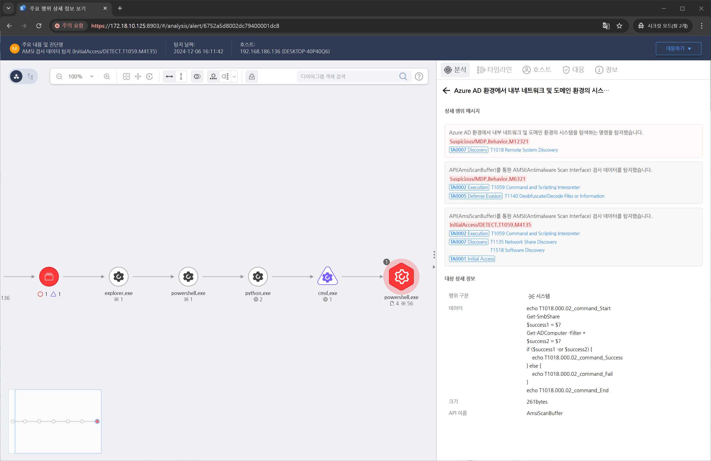

MITRE ATT&CK 액션을 기준으로 대응 방안을 작성
Action = "AMSISCAN" AND CurrentProcess = "powershell.exe" AND AMSISCANDATA = "Get-SmbShare" AND AMSISCAN_DATA = "Get-ADComputer"

Windows 이벤트 로그를 모니터링하여 원격 시스템 탐색 시도를 탐지합니다
공격자가 PowerShell 명령을 사용해 네트워크를 탐색할 가능성이 높으므로, 아래와 같은 명령을 감시합니다.
Get-ADComputer
Get-NetNeighbor
Get-WmiObject
Splunk, Microsoft Sentinel, ELK Stack과 같은 SIEM 도구를 사용하여 원격 탐색 시도를 감지합니다.
네트워크 패킷 분석 도구(예: Wireshark, Zeek)를 사용하여 네트워크 스캔이나 비정상적인 SMB 트래픽을 탐지합니다.
Windows 방화벽에서 원치 않는 원격 요청을 차단합니다, 네트워크를 논리적으로 분리하여 공격자가 탐색할 수 있는 범위를 최소화합니다.
공격자가 자주 사용하는 도구를 차단하거나 권한을 제한합니다.
관리자 계정을 사용한 네트워크 스캔 및 원격 접근을 방지하기 위해 다음을 시행합니다.
SMB 서명을 활성화하여 무단 액세스 또는 전송 중 데이터 변조를 방지합니다.
네트워크 공유의 접근 권한을 최소화합니다. 기본적으로 "Everyone" 또는 "Authenticated Users"에 대해 권한을 부여하지 않도록 설정합니다.
Action 실행시 함께 영향을 받는 다른 Techniqes
| ATT&CK |
|---|
| T1018 |
| D3FEND |
|---|
| D3-SCA System Call Analysis |
| D3-NTF Network Traffic Filtering |
| D3-ITF Inbound Traffic Filtering |
| D3-OTF Outbound Traffic Filtering |